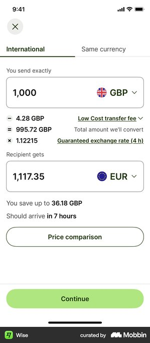
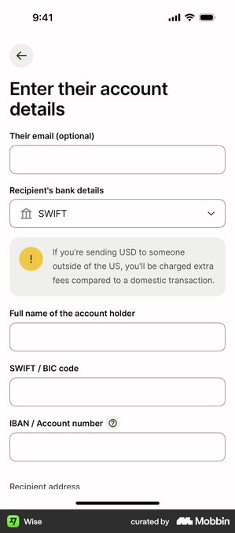
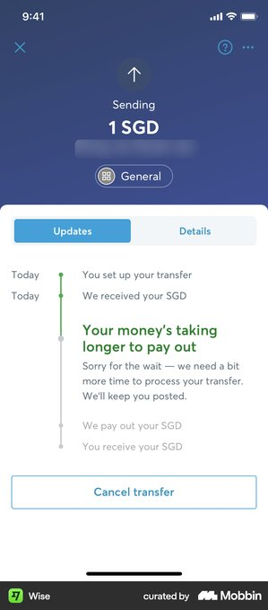
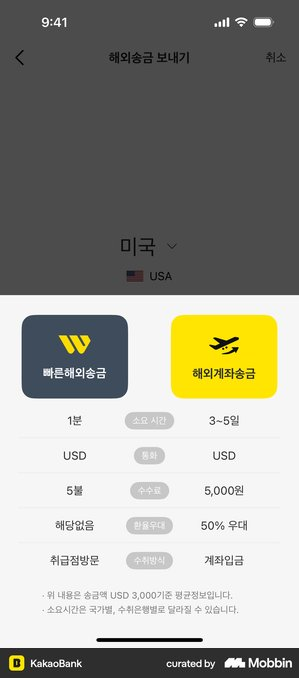

Who we designed for
Wise is brilliant for the multi-currency power user — someone who juggles balances, compares rates, and understands mid-market pricing. But the largest volume of cross-border money movement isn't portfolio management. It's remittances.
We focused on Lina: a caregiver in the US who sends $300 to her mother in Manila every month. Her mom doesn't use a banking app — she picks up the money through GCash, the Philippines' dominant mobile wallet, or sometimes in cash at a neighbourhood branch.
The Philippines is one of the world's largest remittance corridors. Lina's story represents millions of senders who care less about the rate and more about one thing: did Mom get the money, and when?


The insight
Two threads from our research pointed to the same gap.
The loudest complaint: "Where's my money?" When a transfer is delayed or held for a security check, Wise's current tracker drops the sender into an opaque waiting state. The copy reads: "Your money's taking longer to pay out — sorry for the wait, we need a bit more time." No updated ETA. No explanation of why. No action the sender can take. Just wait.


The competitive gap: Other apps are starting to frame money movement around delivery — showing speed, cost, and method side by side, letting senders choose. Wise still leads with the exchange rate. For a rate-conscious user, that's exactly right. For a remittance sender like Lina, it buries the answer she actually needs.
Both threads — the opaque hold and the rate-first framing — share the same root cause: the transfer's "promise" to the sender is scattered across screens and states, and it breaks the moment something unexpected happens.
The bet — the Delivery Promise
One card. One object. We call it the Promise Card.
It says: "Mom gets ₱17,142 by Fri 6pm · GCash." It's born when Lina enters her amount and picks a delivery method. It appears — identical, unchanged — on the review screen, proving the number won't move at the last second. After she confirms, it becomes the live tracker: progress fills, steps update, and the ETA holds steady.
The key design decision: when a transfer is held or delayed, the card morphs but never breaks. A security hold turns the badge blue: "Safety check · ETA Fri 6pm" — calm, specific, still on track. If the ETA genuinely changes, it turns amber: "New ETA Sat 10am" — with a clear reason why, and concrete actions Lina can take to speed things up.
The recipient-gets number — ₱17,142 — never changes, across any state. That constancy is the trust mechanism. The card is the stitch that holds the experience together.
Interactive prototype — click through Send → Review → Tracking → Held states. Use the controls below the phone.
What we chose not to do
Every concept is also a list of things you decided weren't worth the complexity. Here's ours.
Recipient-side tracking. A "Share status with Mom" button is in the prototype, but we didn't build the recipient's view. It's the obvious next step — but this concept had to prove the sender's experience first.
Animated transitions between states. We experimented with the card smoothly morphing from green to blue to amber. It looked polished, but it obscured the state change. A clean swap — the card is green, now it's blue — is more honest and more legible.
Notification-style "push" updates. We considered surfacing delay updates as toast notifications or alert banners. But that fragments the information — the sender would see an alert, then have to find the tracker to understand the full picture. Keeping everything on the card means one place to look.
Multi-corridor support. Different corridors have wildly different delivery options and timelines. We designed for USD → PHP (GCash, cash pickup, bank) and trusted that the pattern — choose method, see promise, track promise — generalises. Proving it across corridors is future work.
The Delivery Promise is a bet that the sender's real question isn't about rates or fees — it's about their family. Did Mom get it? When will she? One card, one number, one answer — from send to delivered.